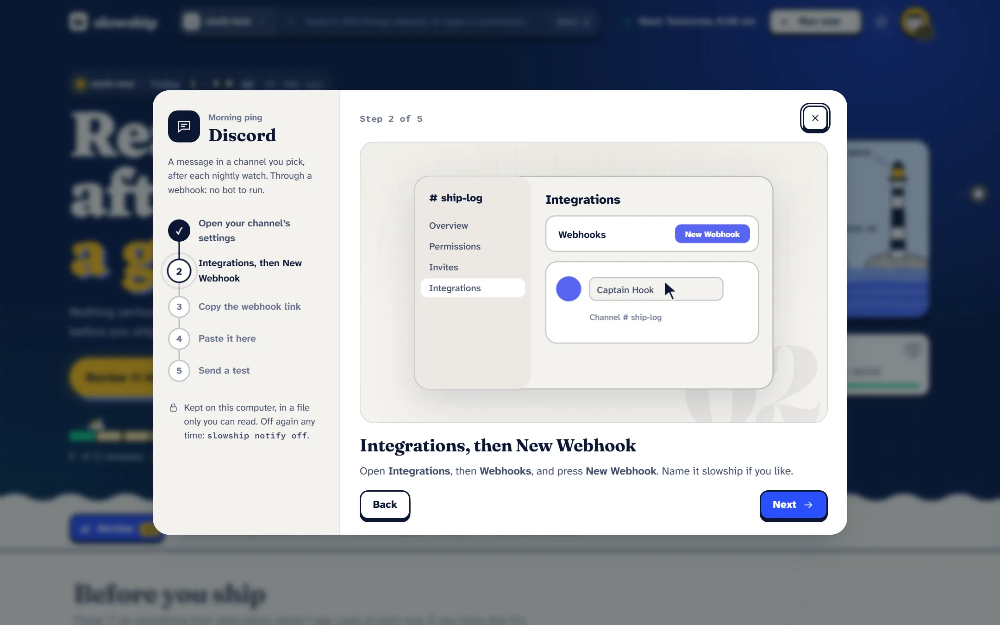

Using it
Morning ping
The verdict, sent to where you’ll see it when you wake: a Discord channel or a Telegram chat. It’s optional and off until you connect one.
#What gets sent
Only a short summary, in slowship’s own words:
- the verdict and the counts,
- the names of what needs you,
- and slowship’s own words for why.
Never code, file paths, key names, or any text a scanned package wrote. Discord mentions are switched off, so a package called @everyone pings nobody.
It talks only to discord.com and api.telegram.org. This is the only thing slowship ever sends anywhere on its own.
#Connect Discord
Discord uses a webhook: a private address that can post into one channel. There’s no bot to run.
- Open the channel’s settings
In Discord, hover the channel, press the gear, and go to Integrations.
- Make a webhook
Press Webhooks, then New Webhook, then Copy Webhook URL.
- Give it to slowship
slowship discordPaste the address when it asks. slowship checks it and offers to send a test.
#Connect Telegram
Telegram uses a bot that you make yourself. It takes a minute.
- Make a bot
In Telegram, open a chat with @BotFather, send
/newbot, and follow its questions. It gives you a token. - Give the token to slowship
slowship telegramPaste the token when it asks.
- Say hello to your bot
Open the chat with your new bot and press Start. slowship finds that chat by itself and writes there from now on.
#Or set it up in the report

Open Settings, then Morning ping. Each step shows a short film of what to click, the one thing to paste, and a button to send a test. Inside slowship review, /discord and /telegram do the same.
#Choose when it sends
By default it sends after every nightly watch.
# only when something needs you
slowship notify when needs
# after every nightly watch (the default)
slowship notify when always
# also after watches you start yourself
slowship notify manual on#Test it, check it, stop it
slowship notify # what's connected
slowship notify test # send one now
slowship notify off # disconnect everything
slowship notify off discord#Where the secret lives
The webhook address or bot token is kept in notify.json inside slowship’s folder (~/.slowship), readable only by you. The report and the terminal only ever see a hint of it, never the whole thing.